1. A magnet attracts dash.
a) wooden materials
b) any metal
c) copper
d) iron and steel
2. One of the following is an example for a permanent magnet.
a) Electromagnet
b) Mumetal
c) Soft iron
d) Neodymium
3. The south pole of a bar magnet and the north pole of a U-shaped magnet will dash.
a) attract each other
b) repel each other
c) neither attract nor repel each other
d) None of the above
4. The shape of the Earth’s magnetic field resembles that of an imaginary dash.
a) U-shaped magnet
b) straight conductor carrying current
c) solenoid coil
d) bar magnet
5. M R I stands for dash.
a) Magnetic Resonance Imaging
b) Magnetic Running Image
c) Magnetic Radio Imaging
d) Magnetic Radar Imaging
6. A compass is used for dash.
a) plotting magnetic lines
b) detection of magnetic field
c) navigation
d) All of these
1. The magnetic strength is dash at the poles.
2. A magnet has dash magnetic poles.
3. Magnets are used in dash for generating electricity.
4. dash are used to lift heavy iron pieces.
5. A freely suspended bar magnet is always pointing along the dash north-south direction.
Magnetite |
Magnetic lines |
A tiny pivoted magnet |
Natural magnet |
Cobalt |
Compass box |
Closed curves |
Ferromagnetic material |
Bismuth |
Diamagnetic material |
4. Consider the statements given below and choose the correct option.
1. Assertion: Iron filings are concentrated more at the magnetic poles.
Reason: The magnets are so sharp
2. Assertion: The Earth’s magnetic field is due to iron present in its core.
Reason: At a high temperature a magnet loses its magnetic property or magnetism.
a. Both assertion and reason are true and reason is the correct explanation of assertion.
b. Both assertion and reason are true, but reason is not the correct explanation of assertion.
c. Assertion is true, but reason is false.
d. Assertion is false, but reason is true.
1. Define magnetic field.
2. What is artificial magnet? Give examples.
3. Distinguish between natural and artificial magnets?
4. Earth acts as a huge bar magnet. Why? Give reasons.
5. How can you identify non-magnetic materials? Give an example of a nonmagnetic material.
1. List out the uses of magnets.
2. How will you convert a ‘nail’ into a temporary magnet?
3. Write a note on Earth’s magnetism.
1. Though Earth is acting as a huge bar magnet it is not attracting other ferromagnetic materials. Why? Give reasons.
2. Why it is not advisable to slide a magnet on an iron bar back and forth during magnetising it?
3. Thamizh Dharaga and Sangamithirai were playing with a bar magnet. They put the magnet down and it broke into four pieces. How many poles will be there?
1. Electricity and Magnetism - Brijlal S. Subramanian - S. Chand publications
2. ICSE Physics - Lakmir Singh and Manjit Kaur - S. Chand publications
2. Physics concepts and connections – Art Hobson. Edition: Pearson Education
https://www.livescience.com/38059- magnetism.html
https://en.wikipedia.org/wiki/ Magnetar
https://www.investopedia.com/terms/m/ magnetic-stripe-card.asp
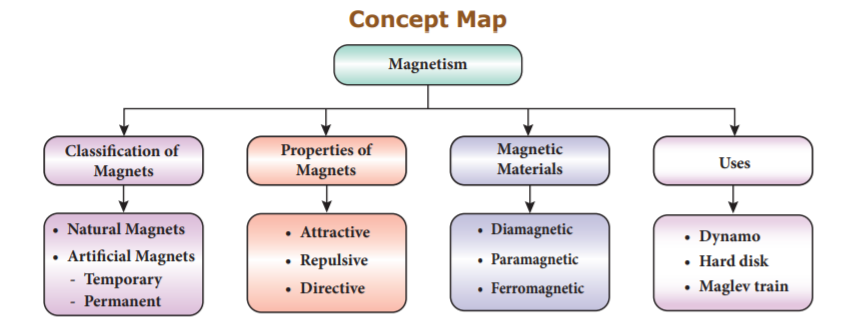
After the completion of this lesson, students will be able to:
Have you ever watched the clear sky in the night? We will be delighted when we see countless number of stars and the beautiful Moon. The science, which deals with the study of stars, planets and their motions, their positions and compositions, is known as astronomy. The stars, the planets, the Moon and many other objects like asteroids and comets in the sky are called celestial objects. The Sun and the celestial bodies which revolve around it, form the solar system. A collection of billions of stars, held together by mutual attraction, is called ‘Galaxy’. Our Sun belongs to a galaxy called ‘Milky Way’. Billions of such galaxies form the universe. Hence, the solar system, the stars and the galaxies are the constituents of the universe. In the recent years many countries are showing interest to explore the space and they are sending manned and unmanned rockets to the Moon and other planets. Our country also has launched a number of rockets into the space and achieved a lot in space research. In this lesson we will study about launching of rockets, types of rocket fuels, Indian space research programmes and NASA.
The universe is a great mystery to all of us. Our mind always tries to know about the space around us. Understanding the space will be helpful to us in many ways. Space research provides information to understand the environment of the earth and the changing climate and weather on the earth. Exploring the space will help us to answer many of the challenges we are facing these days. Discovery of rockets has opened a small portion of the universe to us.
Rockets help us to launch space probes to explore the planets in the solar system. They also help us to launch space-based telescopes to explore the universe. More than all rockets enable us to put satellites, which are useful to us in a number of ways. Our country has effective rocket technology and has applied it successfully to provide so many space services globally.
Do you know?
Rockets were invented in China, more than 800 years ago. The first rockets were a cardboard tube packed with gunpowder. They were called fire arrows. In 1232 AD, the Chinese used these ‘fire arrows’ to defeat the invading Mongol army. The knowledge of making rockets soon spread to the Middle East and Europe, where they were used as weapons.
A rocket is a space vehicle with a very powerful engine designed to carry people or equipment beyond Earth and out into space. There are four major parts or systems in a rocket. They are:
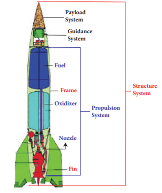
Structural system (Frame)
The structural system is the frame that covers the rocket. It is made up of very strong but light weight materials like titanium or aluminum. Fins are attached to some rockets at the bottom of the frame to provide stability during the flight.
Payload system
Payload is the object that the satellite is carrying into the orbit. Payload depends on the rocket’s mission. The rockets are modified to launch satellites with a wide range of missions like communications, weather monitoring, spying, planetary exploration, and as observatories. Special rockets are also developed to launch people into the Earth’s orbit and onto the surface of the Moon.
Guidance system
Guidance system guides the rocket in its path. It may include sensors, on-board computers, radars, and communication equipments.
Propulsion system
It takes up most of the space in a rocket. It consists of fuel (propellant) tanks, pumps and a combustion chamber. There are two main types of propulsion systems. They are: liquid propulsion system and solid propulsion system.
Do you know?
Polar Satellite Launch Vehicle (P S L V ) and Geosynchronous Satellite Launch Vehicle (G S L V) rockets are India’s popular rockets.
Activity 1
Make a model of a rocket using the low cost materials available to you. Also prepare an album of the rockets launched by India.
A propellant is a chemical substance that can undergo combustion to produce pressurized gases whose energy is utilized to move a rocket against the gravitational force of attraction. It is a mixture, which contains a fuel that burns and an oxidizer, which supplies the oxygen necessary for the burning (combustion) of the fuel. The propellants may be in the form of a solid or liquid.
a. Liquid propellants
In liquid propellants, fuel and oxidisers are combined in a combustion chamber where they burn and come out from the base of the rocket with a great force. Liquid hydrogen, hydrazine and ethyl alcohol are the liquid fuels. Some of the oxidizers are oxygen, ozone, hydrogen peroxide and fuming nitric acid.
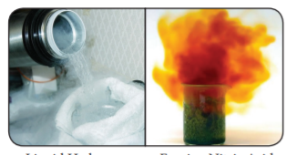
b. Solid propellants
In solid rocket propellants, fuel and oxidiser compounds are already combined. When they are ignited they burn and produce heat energy. Combustion of solid propellants cannot be stopped once it is ignited. Solid fuels used in rockets are polyurethanes and poly butadienes. Nitrate and chlorate salts are used as oxidizers.
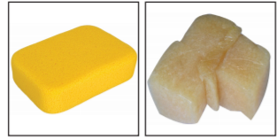
c. Cryogenic propellants
In this type of fuel, the fuel or oxidizer or both are liquefied gases and they are stored at a very low temperature. These fuels do not need any ignition system. They react on mixing and start their own flame.
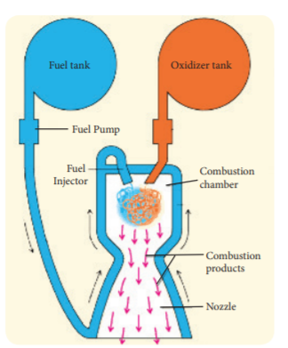
Activity 2: Take a balloon and blow air into it. Now let the air inside the balloon to come out. What do you observe? You can see the balloon moving in a direction opposite to the direction of the air. Rocket also moves almost similar to this.
Before being launched into the space, rockets will be held down by the clamps on the launching pad. Manned or unmanned satellites will be placed at the top of the rocket. When the fuel in the rocket is burnt, it will produce an upward thrust. There will be a point at which the upward thrust will be greater than the weight of the satellite. At that point the clamp will be removed by remote control and the rocket will move upwards. According to Newton’s third law, for every action there is an equal and opposite reaction. As the gas is released downward, the rocket will move upward.
To place a satellite in a particular orbit, a satellite must be raised to the desired height and given the correct speed and direction by the launching rocket. If this high velocity is given to the rocket at the surface of the Earth, the rocket will be burnt due to air friction. Moreover, such high velocities cannot be developed by a single rocket. So, multistage rockets are used. To penetrate the dense lower part of the atmosphere, initially the rocket rises vertically and then it is tilted by a guidance system.
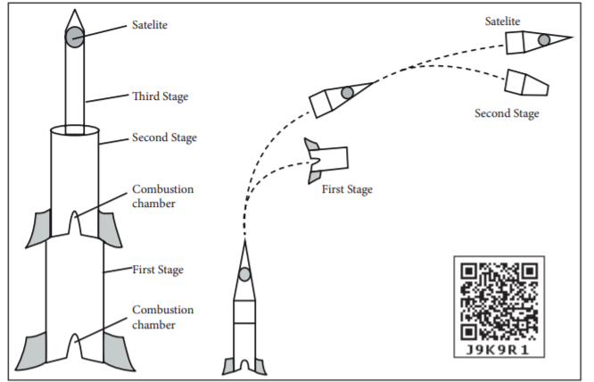
Soon after independence, India initiated space research activities. In 1969, Indian Space Research Organisation (ISRO) was formed with the objective of developing space technology and its application for different needs of the nation. India is focusing on satellites for communication and remote sensing, space transportation systems and application programmes. The first ever satellite Aryabhata was launched in 1975. Since then India has achieved a lot in space programmes equal to that of the developed nations.
Activity 3
With the help of your teacher gather information about the achievements of India in space research. Prepare an album about the satellite programmes of India.
Do you Know?
Rakesh Sharma, an Indian pilot from Punjab was selected as a ‘Cosmonaut’ in a joint space program between India and Soviet Russia and become the first Indian to enter into the space on 2nd April, 1984.
Our country launched a satellite Chandrayaan-1 (meaning Moon vehicle) on 22nd October 2008 to study about the Moon. It was launched from Sathish Dhawan Space Center in Sriharikota, Andhra Pradesh with the help of P S L V (Polar Satellite Launch Vehicle) rocket. It was put into the lunar orbit on 8th November 2008.
The spacecraft was orbiting around the Moon at a height of 100 kilometer from the lunar surface. It collected the chemical, the mineralogical and the geological information about the Moon. This mission was a major boost for the Indian space programs and helped to develop its own technology to explore the Moon. Chandrayaan-1 was operated for 312 days and achieved 95% of its objectives. The scientists lost their communication with the space craft on 28th August 2009. On the successful completion of all the major objectives, the mission was concluded.
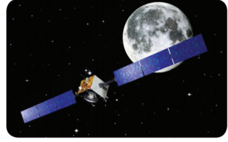
a. Objectives of Chandrayaan 1
The following are the objectives of Chandrayaan 1 mission.
Do you know?
Kalam Sat is the world’s smallest satellite weighing only 64 gram. It was built by a team of high school students, led by Rifath Sharook, an 18 year old school student from ‘Pallapatti’ near Karur, Tamil Nadu. It was launched into the space on 22nd June 2017 by NASA.
b. Achievements of Chandrayaan-1
The following are the achievements of Chandrayaan 1 mission.
Know your Scientist
Dr. Mayilsamy Annadurai was born on 2nd July 1958, at Kodhavadi, a small village near Pollachi in Coimbatore district. He pursued his B.E. degree course at Government College of Technology, Coimbatore. In 1982, he pursued his higher education and acquired an M.E. degree at PSG College of Technology, Coimbatore. In the same year he joined the ISRO as a scientist. And later, he got his doctorate degree from Anna University of Technology, Coimbatore. Annadurai is a leading technologist in the field of satellite system. He has served as the Project Director of Chandrayaan-1. He has also made significant contributions to the cost-effective design of Chandrayaan.
After the successful launch of Chandrayaan-1, ISRO planned an unmanned mission to Mars (Mars Orbiter Mission) and launched a space probe (space vehicle) on 5th November 2013 to orbit Mars orbit. This probe was launched by the PSLV Rocket from Sriharikota, Andra pradesh. Mars Orbiter Mission is India’s first interplanetary mission. By launching Mangalyaan, ISRO became the fourth space agency to reach Mars.
Mangalyaan probe traveled for about a month in Earth’s orbit, and then it was moved to the orbit of Mars by a series of projections. It was successfully placed in the Mars-orbit on 24th September 2014.
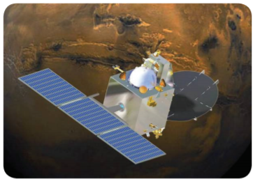
Mars Orbiter Mission (M O M) successfully completed a period of 3 years in the Martian orbit and continues to work as expected. ISRO has released the scientific data received from the Mangalyaan in the past two years (up to September 2016).
More to know
Mars is the fourth planet from the Sun. It is the second smallest planet in the solar system. Mars is called as the Red Planet because of its reddish colour. Iron Oxide present in its surface and also in its dusty atmosphere gives the reddish colour to that planet. Mars rotates about its own axis once in 24 hours 37 minutes. Mars revolves around the Sun once in 687 days. The rotational period and seasonal cycles of Mars are similar to that of the Earth. Astronomers are more curious in the exploration of Mars. So, they have sent many unmanned spacecrafts to study the planet’s surface, climate, and geology.
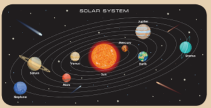
Activity 4
Gather information about the planets in the solar system. Can we reach all the planets in the solar system? Discuss in the class room.
a. Objectives of Mangalyaan
The following are the objectives of Mangalyaan mission.
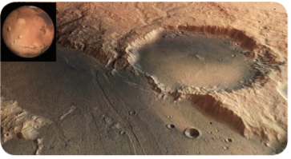
Do you know?
India became the first Asian country to reach Mars and the first nation in the world to achieve this in the first attempt. Soviet Space Program, NASA, and European Space Agency are the three other agencies that reached Mars before ISRO.
ISRO has currently launched a follow-on mission to Chandrayaan-1 named as Chandrayaan-2, on 22nd July 2019. Chandrayaan-2 mission is highly complex mission compared to previous missions of ISRO. It brought together an Orbiter, Lander and Rover. It aims to explore South Pole of the Moon because the surface area of the South Pole remines in shadow much larger than that of North Pole.
Orbiter
It revolves around the moon and it is capable of communicating with Indian Deep Space Network (IDSN) at Bylalu as well as Vikram Lander.
Lander
It is named as Vikram in the memory of Dr Vikram A. Sarabhai, the father of Indian space program.
Rover
It is a six wheeled robotic vehicle named as ‘Pragyan’ (Sanskrit word) that means wisdom. Chandrayaan-2 was successfully inserted into the lunar orbit on 20th August 2019. In the final stage of the mission, just 2.1 kilometer above the lunar surface, Lander ‘Vikram’ lost its communication with the ground station on 7th September 2019. But the Orbiter continues its work successfully.
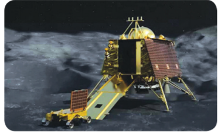
Know your Scientist
Doctor Kailasa Vadivoo Sivan is the chairperson of the Indian Space Research Organization (ISRO). He was born in Sarakkalvilai, in Kanyakumari district of Tamil Nadu. Sivan graduated with a bachelor’s degree in Aeronautical Engineering from Madras Institute of Technology in 1980. Then he got his master’s degree in Aerospace Engineering from Indian Institute of Science, Bangalore in 1982, and started working in ISRO. He completed his doctoral degree in Aerospace Engineering from Indian Institute of Technology, Bombay in 2006. He was appointed as Chairman of ISRO from 10 th January 2018. Sivan is popularly known as the ‘Rocket Man’ for his significant contribution to the development of cryogenic engines for India’s space programs. The ability of ‘ISRO’ to send 104 satellites in a single mission is a great example of his expertise.
More to know
The Moon is the only natural satellite of the Earth. It is at a mean distance of about 3,84,400 km from the Earth. Its diameter is 3,474 km. It has no atmosphere of its own. It doesn’t have its own light, but it reflects the sunlight. The time period of rotation of the Moon about its own axis is equal to the time period of revolution around the Earth. That’s why we are always seeing its one side alone.
NASA is the most popular space agency whose headquarters is located at Washington, USA. It was established on 1st October 1958. It has 10 field centers, which provide a major role in the execution of NASA’s work. NASA is supporting International Space Station which is an international collaborative work on space research. It has landed rovers on Mars, analysed the atmosphere of Jupiter, explored Saturn and Mercury.
The Mercury, Gemini and Apollo programs helped NASA learn more about flying in space. NASA’s robotic space probes have visited every planet in the solar system. Satellites launched by NASA have revealed a wealth of data about Earth, resulting in valuable information such as a better understanding of weather patterns. NASA technology has contributed to make many items used in everyday life, from smoke detectors to medical tests.
Apollo Missions are the most popular missions of NASA. These missions made American Astronauts to land on the Moon. It consists of totally 17 missions. Among them Apollo -8 and Apollo-11 are more remarkable. Apollo-8 was the first manned mission to go to the Moon. It orbited around the Moon and came back to the Earth. Apollo-11 was the first ‘Man Landing Mission’ to the moon. It landed on the Moon on 20th July 1969. Neil Armstrong was the first man to walk on the surface of the Moon
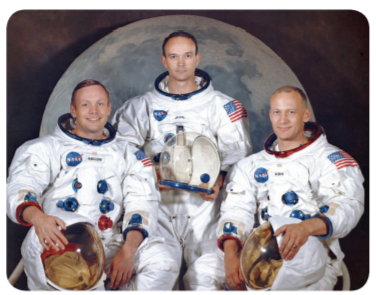
Do you know?
The members present in the crew during the Man Landing Mission were Neil Armstrong, Buzz Aldrin and Michael Collins.
NASA made an agreement to work with ISRO to launch the NISAR Satellite (NASAISRO Synthetic Aperture Radar) and Mars Exploration Missions.
People of Indian origin in America are working in NASA and they have made remarkable contribution to NASA.
Kalpana Chawla
Kalpana Chawla was born on 17th March 1962 in Karnal, Punjab. In 1988, she joined the NASA. She was selected to take part in the Colombia Shuttle Mission in 1997 and she became the first Indian women astronaut to go to space. On her second mission on the Colombia Shuttle, she lost her life, when the shuttle broke down
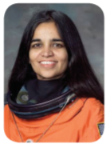
Activity 5
Visit a library and gather more information about the achievements of Kalpana Chawla. Discuss why Kalpana Chawla is an inspiration to all of us.
Do you know?
Kalpana Chawla travelled over 10.4 million miles in 252 orbits of the earth, logging more than 372 hours in space.
Sunitha Williams
Sunitha Williams was born on 19 th September 1965 in USA. She started her career as an astronaut in August 1998. She made two trips to the International Space Station. She set a record of the longest space walking time by a female astronaut in 2012, with a total spacewalk of 50 hour and 40 minutes (7 space walks). She is one of the crew of NASA’s Manned Mars Mission.
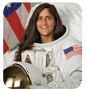